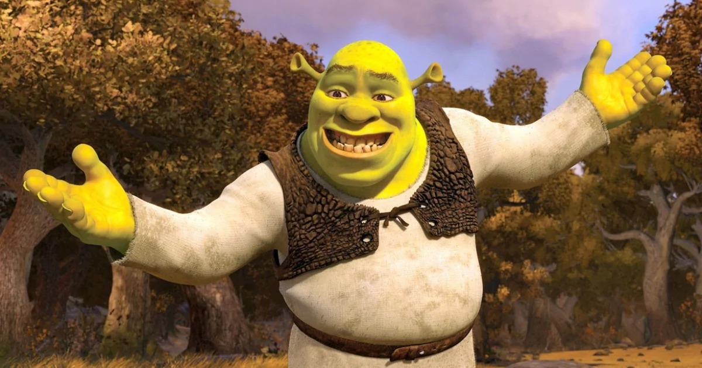

Шрек — головний герой серії анімаційних фільмів студії DreamWorks Animation. Він є огром, який спочатку жив самотньо на болоті, уникав людей і прагнув тиші.
Зовні він великий і зелений, але має добре серце, чесний характер і почуття справедливості. Спочатку Шрек здається грубим і байдужим, проте з часом показує свою доброту, щирість і здатність до дружби. Його життя змінюється після зустрічі з балакучим Віслюком і принцесою Фіоною, яка згодом стає його дружиною.
У процесі пригод він долає власні страхи, вчиться довіряти іншим і розуміє, що справжня краса полягає не у зовнішності, а у внутрішньому світі людини.
Історія Шрека заснована на книзі Вільяма Стейга «Shrek!» (1990). Мультфільм «Шрек», випущений у 2001 році, здобув премію «Оскар» за найкращий анімаційний фільм. Цей персонаж став символом доброти, щирості та прийняття себе таким, яким ти є.
Книга
Вільяма Стейга
